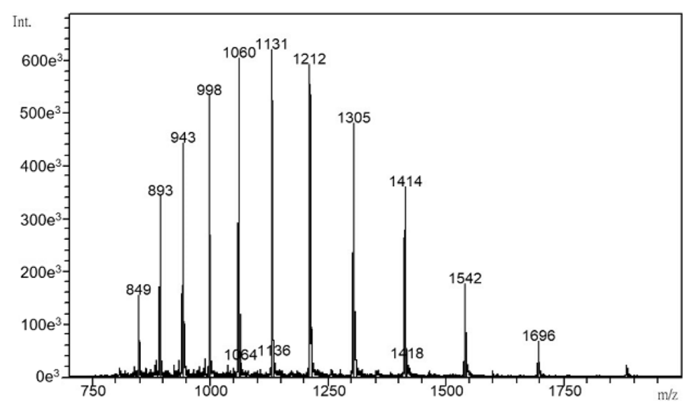
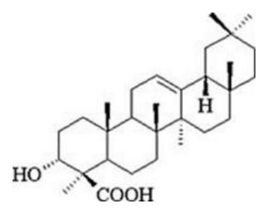

開卷有益 ／
藥師 ／ 藥物分析與生藥學 ／ 114 年第 2 次114 年第 2 次藥師藥物分析與生藥學試題與答案
這一頁是民國 114 年第 2 次藥師藥物分析與生藥學的整份歷屆試題，共 80 題，題目與標準答案出自考選部「國家考試試題及測驗式試題答案」開放資料，其中 77 題附有詳解。以下逐題列出題幹、選項與答案；要計時作答或記錄成績，請用線上練習。
考選部原始場次代碼：114090
線上作答這一科 →
全部 80 題
第 1 題
以EDTA 滴定法定量碳酸鈣時，溶液之pH 值應調整至下列何者以避免Mg 2+之干擾？
（A） 4（B） 6（C） 10（D） 13答案：（D）
詳解與考點 正解：以 EDTA 定量 calcium carbonate 時，必須讓 Mg2+ 不再以可滴定游離離子存在。（D）pH 13 的強鹼條件會使 Mg2+ 傾向形成 Mg(OH)2 沉澱，從而排除其與 EDTA 螯合的干擾；Ca2+ 仍可在適當指示劑條件下被測定，故選 D。
A：pH 4 時 EDTA 多處於質子化型態，對金屬離子的有效螯合能力不足，且 Mg2+ 不會因氫氧化物沉澱而被排除。
B：pH 6 仍不足以使 Mg2+ 以 Mg(OH)2 形式分離，無法達成本題要求的選擇性。
C：pH 10 是 Ca2+、Mg2+ 常可同時與 EDTA 反應的條件，適合測總硬度，卻會保留 Mg2+ 對 calcium carbonate 測定的干擾。
本題考點：EDTA 螯合滴定（EDTA complexometric titration）——判斷滴定 pH 時，同時看 EDTA 的去質子化程度與待測金屬／干擾金屬的存在型態；鎂離子排除（magnesium interference removal）——只測 Ca2+ 而需排除 Mg2+ 時，利用高 pH 使 Mg(OH)2 沉澱；總硬度測定（water hardness titration）——pH 10 會保留 Ca2+、Mg2+ 的共同反應，不可誤當成選擇性測鈣條件。
第 2 題
下列何者不是非水滴定分析中常見之溶劑？
（A） 丙酸（B） 氯仿（C） 硝酸（D） 嗎福林（morpholine）答案：（C）
詳解與考點 正解：非水滴定的溶劑須能在無水環境中提供適合的酸鹼性質，而非只要本身是酸即可。（C）硝酸是強酸兼氧化劑，不是非水酸鹼滴定常用來調整酸鹼平衡的溶劑；其反應性過強，也不符合此類分析溶劑的典型角色，故選 C。
A：丙酸可作為 protogenic solvent，能提供質子並增強弱鹼的表觀鹼性，是非水酸滴定可用的酸性溶劑類型。
B：氯仿屬 aprotic solvent，雖不強烈供受質子，仍可作為非水滴定的惰性介質或與其他溶劑併用。
D：嗎福林（morpholine）為 protophilic solvent，具有接受質子的鹼性特質，可用於適合的非水鹼滴定系統。
本題考點：非水滴定溶劑（nonaqueous titration solvents）——先依溶劑是否供質子、受質子或近乎惰性來判斷其用途；protogenic solvent——分析弱鹼時以酸性溶劑增強受質子的傾向；protophilic solvent——分析弱酸時以鹼性溶劑增強失質子的傾向。
第 3 題
碘化銀飽和溶液於25℃時的濃度為1.23×10-8 莫耳／升，則其溶解度積（Ksp）為何？（碘化銀分子量為 234.8）
（A） 1.11×10 -4（B） 1.23×10 -8（C） 2.46×10 -8（D） 1.5×10 -16答案：（D）
詳解與考點 正解：AgI 為 1:1 鹽，在純水飽和溶液中每莫耳 AgI 溶解會各給 1 莫耳 Ag+ 與 I−。題給溶解度 s = 1.23×10-8 mol/L，所以 [Ag+] = 1.23×10-8 mol/L、[I−] = 1.23×10-8 mol/L。代入 Ksp = [Ag+][I−] = （1.23×10-8）×（1.23×10-8）= 1.5129×10-16，約為 1.5×10-16，故選 D。
A：1.11×10-4 不等於題給的莫耳溶解度，也不等於其平方。分子量只在題目提供質量濃度時才需換算；本題已直接給 mol/L，不需分子量。
B：1.23×10-8 是 AgI 的莫耳溶解度 s，而 Ksp 對 1:1 鹽須取兩個平衡離子濃度的乘積，不能直接把 s 當成 Ksp。
C：2.46×10-8 是 2s 的形式，既不是 [Ag+][I−]，也不是 AgI 的溶解度積計算結果。
本題考點：溶解度積（solubility product, Ksp）——先由解離係數把 s 轉成各離子濃度，再相乘並依係數次方處理；1:1 難溶鹽（1:1 sparingly soluble salt）——AgI 的 Ksp = s^2，題目已給莫耳溶解度時分子量通常不是計算必要資料；單位辨識（molar solubility）——mol/L 是濃度，不可與 Ksp 或質量濃度直接互換。
第 4 題
下列何者不適用酸滴定法分析其含量？
（A） 六次甲基四胺（hexamine）（B） 三乙醇胺（triethanolamine）（C） 檸檬酸鈉（sodium citrate）（D） 阿斯匹林（aspirin）答案：（D）
詳解與考點 正解：酸滴定法是以標準酸滴定可接受質子的分析物或鹼性鹽類。（D）aspirin 為 acetylsalicylic acid，本身帶有可被鹼中和的羧酸基，含量測定應以鹼滴定的酸鹼方向處理，而不是再用酸滴定，故選 D。
A：六次甲基四胺（hexamine）含可接受質子的胺類氮，可與標準酸反應，屬可用酸滴定分析的鹼性化合物。
B：三乙醇胺（triethanolamine）的三級胺氮可接受質子，酸滴定測得的是其鹼性官能基的當量。
C：檸檬酸鈉（sodium citrate）為弱酸的鈉鹽，檸檬酸根可被酸質子化，因此可依其鹼性鹽特性以酸滴定處理。
本題考點：酸滴定法（acidimetry）——分析物若以接受質子的鹼性官能基或鹼性鹽存在，可用標準酸滴定；鹼滴定法（alkalimetry）——遇到羧酸等可失質子的酸性藥物時，改以標準鹼中和；酸鹼當量方向（acid-base equivalence direction）——先判斷分析物在反應中是供質子或受質子，再選滴定劑。
第 5 題
依中華藥典第九版，以鹼滴定分析法進行硼酸之含量測定時，需加入水與下列何者加溫溶解後，再以1 N 氫氧 化鈉溶液滴定之？
（A） 異丙醇（B） 山梨醇（C） 甲基紅（D） 乙酸酐答案：（B）
詳解與考點 正解：硼酸本身是弱 Lewis acid，直接以 NaOH 滴定時終點不夠明顯；加入多羥基醇可形成較易滴定的硼酸酯複合物。（B）山梨醇（sorbitol）具多個相鄰羥基，與硼酸形成複合物後增強其酸性，依題意與水加溫溶解後即可用 1 N NaOH 滴定，故選 B。
A：異丙醇只有單一羥基，不能像多羥基醇般有效與硼酸形成增強酸性的螯合型複合物。
C：甲基紅是酸鹼指示劑，不是用來與硼酸形成複合物、並依題意加溫溶解以改善滴定反應的試劑。
D：乙酸酐為醯化與脫水試劑，缺乏山梨醇的多羥基配位特性，加入後也不會建立本題所需的硼酸增酸滴定系統。
本題考點：硼酸複合滴定（boric acid complexometric alkalimetry）——硼酸滴定終點不清楚時，加入多羥基醇使其形成較強酸性的複合物；山梨醇（sorbitol）——辨識硼酸鹼滴定的增效劑時，看是否有多個可與 borate 配位的羥基；Lewis acid（Lewis acid）——硼酸的酸性表現不以單純釋放質子為主，故需要藉複合化改善滴定性。
第 6 題
下列藥物何者不適用非水鹼滴定分析？
（A） phenytoin（B） methacholine chloride（C） sulfathiazole（D） amobarbital答案：（B）
詳解與考點 正解：非水鹼滴定適合可在適當非水介質中失去質子的弱酸性藥物。（B）methacholine chloride 為季銨鹽，帶永久正電的季銨中心且沒有可供此滴定反應定量的酸性質子；它不屬以非水強鹼滴定酸性官能基的適用對象，故選 B。
A：phenytoin 的 hydantoin imide proton 具弱酸性，可在非水介質中以強鹼滴定。
C：sulfathiazole 的 sulfonamide proton 具可滴定的弱酸性，非水鹼滴定可增強其酸性反應的可測性。
D：amobarbital 為 barbiturate，具有 imide 型酸性質子，適合以非水鹼滴定分析。
本題考點：非水鹼滴定（nonaqueous alkalimetry）——先找分析物是否有可失去質子的弱酸性官能基，再判斷是否適用；季銨鹽（quaternary ammonium salt）——季銨中心已四取代並帶永久正電，不能以一般弱酸去質子化概念處理；imide acid（imide acidity）——hydantoin 與 barbiturate 的 imide proton 是非水鹼滴定常見的分析位點。
第 7 題
取含量不低於98.50％適量之L-離胺酸（L-Lysine, C6H14N2O2，分子量：146.19），以凱氏（Kjeldahl）氮測 定法測定，其所含氮量百分比應為：
（A） 4.72〜4.86（B） 9.44〜9.72（C） 18.88〜19.44（D） 37.76〜38.88答案：（C）
詳解與考點 正解：凱氏氮測定先依分子式算出每莫耳的氮質量，再乘上檢品最低含量。L-lysine 每莫耳含 2 mol N，氮質量 = 2 mol × 14.01 g/mol = 28.02 g。純 L-lysine 的氮百分比 = 28.02 g / 146.19 g × 100% = 19.17%。檢品含量最低為 98.50%，故最低氮百分比 = 19.17% × 0.9850 = 18.88%；與含兩個氮原子的規格區間相符者為 18.88～19.44%，故選 C。
A：4.72～4.86 約為正確氮百分比的四分之一，無法對應 L-lysine 每分子含 2 個氮的分子式。
B：9.44～9.72 約為正確氮百分比的一半，等同只計入 1 個氮原子，遺漏了另一個胺基氮。
D：37.76～38.88 約為正確氮百分比的兩倍，會相當於把 2 個氮誤算成 4 個氮。
本題考點：凱氏氮測定（Kjeldahl nitrogen determination）——由化學式先數氮原子數，再以氮總質量／分子量計算理論氮百分比；含量校正（assay correction）——檢品含量為 98.50% 時，理論百分比須乘 0.9850，不能直接當作純品；分子式計量（molecular stoichiometry）——選項若剛好是正解的一半或兩倍，優先檢查氮原子數是否漏算或重算。
第 8 題
估算食物、血液及肥料中的蛋白質含量，可將凱氏（Kjeldahl）氮測定法測得之含氮量乘以下列何種定值？
（A） 6.25（B） 4.48（C） 22.4（D） 9.62答案：（A）
詳解與考點 正解：一般蛋白質平均約含 16% 氮，凱氏法測得氮含量後以蛋白質換算係數回推總蛋白。換算係數 = 100% / 16% = 6.25，因此氮量乘以 6.25 即為常用的粗估蛋白質含量，故選 A。
B：4.48 不是由平均 16% 氮反推得到的蛋白質換算係數，乘用後會系統性低估蛋白質含量。
C：22.4 常與氣體莫耳體積的數值連結，並非以氮百分比估算蛋白質所用的係數。
D：9.62 不對應 100% / 16% 的計算，不能用作一般食物、血液或肥料蛋白質的 Kjeldahl 換算值。
本題考點：蛋白質換算係數（nitrogen-to-protein conversion factor）——未指定特定蛋白質時，以平均含氮 16% 反推 6.25；凱氏氮測定（Kjeldahl method）——先測總氮，再以適用的換算係數估計蛋白質，而非把氮百分比直接當蛋白質百分比。
第 9 題
下列關於脂肪及固定油碘價定義之敘述，何者正確？
（A） 反應檢品100 g 所吸收碘的g 數（B） 反應檢品10 g 所吸收碘的g 數（C） 反應檢品1 g 所吸收碘的mg 數（D） 反應檢品100 g 所吸收碘的mg 數答案：（A）
詳解與考點 正解：脂肪與固定油的碘價以固定檢品重量和碘吸收重量定義。（A）碘價是 100 g 檢品所吸收的碘之 g 數，用來反映雙鍵不飽和程度；檢品與碘的兩個單位都必須是 g，故選 A。
B：以 10 g 檢品為基準不符合碘價的標準定義，會使數值與不同資料來源的碘價無法直接比較。
C：以 1 g 檢品、mg 碘表示的是另一種比例，並非脂肪及固定油的碘價定義。
D：雖以 100 g 檢品為基準，但把碘量寫成 mg 會比標準定義小 1,000 倍，單位不正確。
本題考點：碘價（iodine value）——看到脂肪不飽和度的定義題時，固定記為每 100 g 檢品吸收的 g 碘；不飽和度測定（degree of unsaturation）——碘加成量愈大通常代表可反應雙鍵愈多；單位守恆（unit consistency）——定義題先同時核對檢品基準量與吸收物的單位，不能只對其中一項。
第 10 題
油酸（oleic acid）的酸價為何？
（A） 196～204（B） 50～85（C） 100～108（D） 18～24答案：（A）
詳解與考點 正解：油酸是單羧酸，酸價等於中和 1 g 油酸所需的 KOH 質量。以 oleic acid 分子量約 282.46 g/mol 計，1 mol 酸需要 1 mol KOH：56.11 g/mol / 282.46 g/mol × 1,000 mg/g = 198.6 mg KOH/g。因此其酸價落在 196～204 的範圍，故選 A。
B：50～85 明顯低於單一羧酸油酸每分子需 1 當量 KOH 所對應的約 200 mg KOH/g，不能作為油酸的酸價。
C：100～108 約只有油酸理論酸價的一半，會把中和所需的當量數或分子量關係判錯。
D：18～24 更遠低於約 200 mg KOH/g，無法符合純單羧酸油酸的中和當量。
本題考點：酸價（acid value）——定義為中和 1 g 脂肪酸或油脂所需的 mg KOH，先確認檢品重量基準；單羧酸當量（monocarboxylic acid equivalent）——每分子只有 1 個可中和羧酸時，以 1 mol KOH/mol 酸計算；分子量與酸價（molecular weight versus acid value）——在官能基數相同下，分子量愈小，單位重量所需 KOH 愈多。
第 11 題
下列何種官能基可作為UV-Vis 之發色團（chromophore）？①OH ②COOH ③CHO ④CH3 ⑤NH2
（A） ①⑤（B） ②③（C） ③④（D） ①③答案：（B）
詳解與考點 正解：UV-Vis 的 chromophore 是直接提供可觀察電子躍遷的發色基團。（B）的 ②COOH 與 ③CHO 都含 C=O，羰基可發生 π→π* 或 n→π* 躍遷，因此兩者可作為發色團；①OH、⑤NH2 則主要是改變既有發色團吸收的 auxochrome，故選 B。
A：①OH 與 ⑤NH2 均有孤對電子，接在共軛系統上時可改變吸收位置或強度，但本身在此分類屬助色團而非羰基型發色團。
C：③CHO 的羰基是發色團，但 ④CH3 不提供可用的 π 或 n 電子躍遷，兩者合列不能成立。
D：③CHO 正確，然而 ①OH 是助色團；一個正確基團與一個非發色團並列仍不是正確組合。
本題考點：發色團（chromophore）——判斷 UV-Vis 吸收主體時，先找可作 π→π* 或 n→π* 躍遷的官能基；助色團（auxochrome）——OH、NH2 等連到發色團時會調整吸收，但不應與直接發色的 C=O 混為同類；羰基吸收（carbonyl electronic transition）——看到 COOH、CHO 等結構時，辨識其共同的 C=O 才能處理不同取代基名稱。
第 12 題
以質譜分析小分子化合物，下列游離法何者較容易產生分子離子[M] +的訊號？
（A） 電子撞擊（EI）（B） 電灑（ESI）（C） 化學游離（CI）（D） 快速原子撞擊（FAB）答案：（A）
詳解與考點 正解：題目要的是小分子原來質量所對應的分子離子，而不是加上一個質子後的準分子離子。（A）電子撞擊（EI）以高能電子移除分子一個電子，直接形成分子自由基陽離子 [M]+•，因此較容易看到代表原分子質量的分子離子訊號，故選 A。
B：電灑（ESI）為軟性游離，常形成 [M+H]+、[M−H]− 或金屬加合離子；訊號有利於測分子量，但通常不是未加合的 [M]+•。
C：化學游離（CI）先由試劑氣體產生離子，再將質子或其他基團轉移給分析物，常見的是 [M+H]+ 準分子離子。
D：快速原子撞擊（FAB）藉基質與快速原子轟擊使分析物游離，常得到質子化分子等準分子離子，與 EI 的直接電子移除不同。
本題考點：電子撞擊游離（electron ionization, EI）——要找 [M]+• 時，選直接移除電子的硬游離法；準分子離子（quasi-molecular ion）——看到 [M+H]+ 或加合離子時，先辨識其質量已不是未修飾的 M；軟游離法（soft ionization）——ESI、CI、FAB 較能減少碎裂，但常以加質子或加合形式呈現。
第 13 題
下列何種散射光（scattering）占有比例最少？
（A） Stokes scattering（B） Anti-Stokes scattering（C） Rayleigh scattering（D） Tyndall scattering答案：（B）
詳解與考點 正解：Raman 散射中，anti-Stokes photon 需由已處於振動激發態的分子出發；在熱平衡下，這類分子的布居數遠少於基態分子。（B）Anti-Stokes scattering 因起始激發態分子少，強度與所占比例通常最低，故選 B。
A：Stokes scattering 由振動基態分子吸收能量後散射，基態分子數最多，因此通常比 anti-Stokes scattering 強。
C：Rayleigh scattering 是不改變能量的彈性散射，通常是散射光中最主要的成分，不是比例最少者。
D：Tyndall scattering 是膠體粒子對光的散射現象；它與 Raman 支線的熱平衡布居判準不同，不能取代 anti-Stokes 因激發態稀少而最弱的結論。
本題考點：Raman 散射（Raman scattering）——比較 Stokes 與 anti-Stokes 時，先看起始振動能階的布居數；Boltzmann distribution（Boltzmann distribution）——熱平衡下高能振動態人口較少，故 anti-Stokes 訊號較弱；Rayleigh scattering——遇到彈性散射時，判斷其頻率不變，並與 Raman 的能量位移支線分開。
第 14 題
下列光譜法何者不須安裝特定光源？
（A） 原子發射光譜法（atomic emission spectrophotometry）（B） 紅外光光譜法（infrared spectrophotometry）（C） 紫外光－可見光分光光譜法（UV-visible spectrophotometry）（D） 螢光光譜法（fluorescence spectrophotometry）答案：（A）
詳解與考點 正解：本題區分的是儀器是否需要裝設外加的特定入射光源，而不是是否需要任何形式的激發能量。（A）原子發射光譜法中，試樣原子經火焰、電漿等激發後自行放出特徵光，再量測其發射強度，因此不須安裝特定的分析光源，故選 A。
B：紅外光光譜法須由 IR source 提供紅外線，量測檢品對各波數的吸收，不能沒有特定光源。
C：紫外光－可見光分光光譜法須提供 UV 與可見光範圍的入射光，再比較透射或吸收強度，光源是基本組件。
D：螢光光譜法須先以 excitation source 激發檢品，再測其放出的螢光；發射來自檢品不代表可省略激發光源。
本題考點：原子發射光譜法（atomic emission spectrophotometry）——分析物本身受激後即為特徵放射光來源，區分時不要把激發能源誤當成入射光源；吸收光譜法（absorption spectrophotometry）——IR 與 UV-visible 均需已知光源穿過檢品後量測吸收；螢光光譜法（fluorescence spectrophotometry）——螢光量測要分清激發光與檢品發射光兩個階段。
第 15 題
下列有關焰火原子發射光譜法測定之敘述，何者正確？
（A） 金屬原子易與硝酸根、氯離子等形成不揮發性鹽類造成放射光強度降低（B） 檢品溶液黏度增加時將導致放射光強度減小（C） 檢品中其他激態元素會對放射光造成嚴重之吸收（D） 檢品溶液可加入氯化鑭以增加分析原子的游離答案：（B）
詳解與考點 正解：焰火原子發射的訊號先受霧化、形成液滴與進入火焰的樣品量影響。（B）檢品溶液黏度增加會使吸入與霧化效率下降，進入火焰並被激發的分析原子變少，故放射光強度減小，故選 B。
A：硝酸根與氯離子形成的鹽類通常不像磷酸根、硫酸根等那樣容易造成難揮發性化合物；把它們一概視為使金屬原子無法揮發的主要干擾來源不正確。
C：其他元素造成的光譜干擾主要是發射線重疊或背景發射，不是「其他激態元素嚴重吸收放射光」的固定機制。
D：氯化鑭常作為釋放劑或保護劑來減少化學干擾，並非用來增加分析原子的游離；若要抑制游離，判準是提高電子濃度使電離平衡偏向中性原子。
本題考點：霧化效率（nebulization efficiency）——焰火發射強度隨進入火焰的分析物量而變，黏度升高先檢查霧化是否變差；化學干擾（chemical interference）——難揮發化合物會減少自由原子，但要辨別真正造成耐火鹽的陰離子；游離干擾（ionization interference）——需要抑制游離時以電子濃度調整平衡，不能把釋放劑的用途誤寫成增加游離。
第 16 題
下列關於核磁共振譜的敘述，何者錯誤？
（A） 一般而言，同一個檢品碳譜所需的測試時間比氫譜多（B） 在同一台核磁共振儀，碳核的共振頻率比氫核低（C） 碳譜訊號的來源是樣品中 12C 核種（D） 同一檢品，碳譜的訊雜比通常較氫譜低答案：（C）
詳解與考點 正解：碳核的 NMR 可觀察訊號來自自旋量子數不為 0 的 13C，不是 12C。12C 的質子數與中子數皆為偶數，自旋量子數為 0，在磁場中不產生可供核磁共振偵測的能階分裂；13C 雖天然豐度低，才是碳譜的訊號來源，故選 C。
A：13C 的天然豐度與感度都低於 1H，為累積足夠訊噪比通常需量測較久，因此碳譜所需時間一般較氫譜長。
B：在相同磁場強度下，共振頻率與磁旋比成正比；13C 的磁旋比較 1H 小，所以碳核共振頻率較低。
D：13C 的天然豐度低且核磁感度較弱，訊號通常比 1H 氫譜弱，故同一檢品的碳譜訊噪比通常較低。
本題考點：核自旋與 NMR 活性（nuclear spin and NMR activity）——判斷某核種能否產生 NMR 訊號時，先看其自旋量子數是否不為 0；碳核磁共振（13C NMR）——比較 13C 與 1H 譜時，低天然豐度與較低感度會同時造成量測較久、訊噪比較低。
第 17 題 待校
下列選項所標示的氫核，何者的偶合常數（Ｊ）最大？
答案：（B）
第 18 題
下列原子，何者的精確質量（exact mass）與其整數質量（nominal mass）相差最多？
（A） 1H（B） 12C（C） 19F（D） 15N答案：（A）
詳解與考點 正解：精確質量與整數質量的差異要取絕對值比較。（A）1H 的精確質量約為 1.007825 u，整數質量為 1 u，差值為 |1.007825 u - 1 u| = 0.007825 u；此值大於其餘選項，故選 A。
B：12C 的精確質量定義為 12 u，整數質量也是 12 u，差值為 0 u。
C：19F 的精確質量約為 18.998403 u，整數質量為 19 u，差值約為 0.001597 u，小於（A）1H 的差值。
D：15N 的精確質量約為 15.000109 u，整數質量為 15 u，差值約為 0.000109 u，也小於（A）1H 的差值。
本題考點：精確質量與整數質量（exact mass and nominal mass）——比較時以各同位素實際原子質量減去最近整數質量後取絕對值，不以質量數大小判斷；質譜質量缺損（mass defect）——核結合能使精確質量未必等於整數質量，12C 是定義上的例外基準。
第 19 題
Procaine 於酸性環境下（0.1 M HCl），最大吸收波長（λmax）發生改變，會發生下列何種現象？
（A） hypochromic shift（B） hyperchromic shift（C） bathochromic shift（D） hypsochromic shift答案：（D）
詳解與考點 正解：procaine 在 0.1 M HCl 中，其芳香胺基會被質子化，孤對電子不再有效提供給芳香環共軛系統。π→π* 躍遷能隙因而變大，最大吸收波長往短波長移動，這是 hypsochromic shift，故選 D。
A：hypochromic shift 描述的是吸收強度或莫耳吸光係數下降，不是 λmax 往短波長移動；名稱都含有 hypo，容易與波長方向混淆。
B：hyperchromic shift 同樣描述吸收強度上升，並不表示最大吸收波長的方向。
C：bathochromic shift 是 λmax 往長波長移動；本題的胺基質子化反而削弱共軛，方向相反。
本題考點：紫外可見光譜位移（hypsochromic and bathochromic shift）——λmax 變短為 hypsochromic shift，變長為 bathochromic shift；助色團質子化（auxochrome protonation）——含孤對電子的助色團被質子化後，共軛供電子能力下降時，判斷為吸收往較短波長移動。
第 20 題
下列之光源應用，何者正確？
（A） visible－quartz halogen lamp（B） fluorescence－D2 lamp（C） UV－tungsten lamp（D） IR－sodium D line答案：（A）
詳解與考點 正解：可見光區需要連續的可見光光源，quartz halogen lamp 在可見光區有適當且穩定的連續發射，故（A）配對正確，故選 A。
B：D2 lamp 是紫外光區的連續光源，不是螢光測定常用的高強度激發光源；螢光儀常以 xenon arc lamp 或 mercury lamp 提供激發光。
C：tungsten lamp 的主要適用區為可見光與近紅外光，紫外光區通常使用 D2 lamp 或 hydrogen lamp。
D：sodium D line 是窄線發射光，不是紅外光譜所需的廣頻紅外光源；紅外光常用 Nernst glower 或 Globar。
本題考點：光譜儀光源（spectroscopic light sources）——先依量測波段配對光源，紫外光優先判斷 D2 或 hydrogen， 可見光判斷 tungsten 或 halogen，紅外光判斷 Nernst glower 或 Globar；螢光激發（fluorescence excitation）——需要足夠強度的激發光時，選擇可提供寬波段高強度輸出的弧光燈。
第 21 題
利用螢光法測定注射用水中的鋁離子（Al 3+）含量，係使用下列何種反應試劑與鋁離子形成螢光錯合物？
（A） chlorphenamine（B） 8-hydroxyquinoline（C） ethylenediamine tetraacetic acid（D） fluorescein答案：（B）
詳解與考點 正解：8-hydroxyquinoline 可與 Al3+ 形成具螢光特性的螯合物，因此可作為螢光法測定注射用水鋁離子的反應試劑，故選 B。
A：chlorphenamine 是抗組織胺藥物，並非用來與 Al3+ 生成此測定所需螢光錯合物的分析試劑。
C：ethylenediamine tetraacetic acid 雖是多牙螯合劑，但其與 Al3+ 形成的錯合物不是本法量測的螢光錯合物，反而可用於遮蔽金屬離子。
D：fluorescein 本身是螢光染料，不能取代 8-hydroxyquinoline 作為與 Al3+ 形成特異螢光螯合物的反應試劑。
本題考點：螢光錯合分析（fluorometric complexation）——測定金屬離子時要選能與目標離子形成穩定且具螢光性錯合物的配位試劑；金屬螯合劑（chelating agents）——能配位不等於能作螢光試劑，還須判斷錯合物是否帶來可量測的螢光訊號。
第 22 題
腎上腺素的比旋光度 ＝-51（c＝2.0, 0.5 M HCl），其中「25」係指下列何者？
（A） 旋光度（B） 鈉D 線（C） 檢品溶液濃度（D） 溫度答案：（D）
詳解與考點 正解：比旋光度的慣用標示中，上標 25 表示測定溫度為 25 °C；下標 D 才是指定 sodium D line，c 則標示檢品溶液濃度。因此「25」對應溫度，故選 D。
A：比旋光度數值 -51 是在既定溫度、波長與濃度條件下報告的比旋光度，不是上標 25 所代表的旋光度。
B：sodium D line 對應的是標示中的下標 D，而非上標 25。
C：檢品溶液濃度由 c = 2.0 表示，上標 25 不表示濃度。
本題考點：比旋光度標示（specific rotation notation）——讀取 [α] 時，上標判斷測定溫度、下標判斷光源波長；旋光測定條件（polarimetry conditions）——比較不同檢品的比旋光度前，必須同時核對溫度、波長、濃度與溶媒。
第 23 題
下列化合物的紫外光光譜中，何者之λmax（nm）最大？
（A） CH3CH＝CHCH3（B） CH3(CH＝CH)2CH3（C） CH3(CH＝CH)3CH3（D） CH3CH＝CHCH2CH＝CHCH2CH＝CHCH3答案：（C）
詳解與考點 正解：λmax 最大的判準是連續共軛系統最長。（C）CH3(CH=CH)3CH3 含有三個連續共軛雙鍵，π→π* 躍遷能隙最小，故吸收在四者中最長波長，故選 C。
A：CH3CH=CHCH3 只有一個雙鍵，沒有延伸共軛，π→π* 躍遷所需能量較高，λmax 較短。
B：CH3(CH=CH)2CH3 有兩個連續共軛雙鍵，λmax 會比單烯長，但共軛長度仍小於（C）三烯。
D：CH3CH=CHCH2CH=CHCH2CH=CHCH3 雖有三個雙鍵，雙鍵之間以 CH2 隔開而非連續共軛；外觀上雙鍵數相同，但不會產生（C）的延伸 π 電子離域。
本題考點：共軛與最大吸收波長（conjugation and λmax）——比較烯類紫外光譜時，先數連續共軛的雙鍵數，不只數總雙鍵數；π→π* 躍遷能隙（π→π* energy gap）——共軛越長，能隙越小，吸收波長越長。
第 24 題
關於拉曼光譜分析之敘述，下列何者正確？
（A） 待測樣品必須有chromophore 結構（B） 係由能階躍遷時的overtone 和combination 現象造成（C） 光譜圖一般以cm -1 為單位（D） 其吸收強的區間通常與紅外光光譜相重疊答案：（C）
詳解與考點 正解：拉曼光譜通常以入射光與散射光的波數差表示振動資訊，光譜橫軸的慣用單位為 cm-1，故選 C。
A：拉曼活性取決於分子振動時極化率是否改變，不要求待測物具有 chromophore；chromophore 是紫外可見光吸收較重要的概念。
B：拉曼光譜的基本來源是單色光的非彈性散射所對應的振動能階改變，overtone 與 combination band 是可能觀察到的譜帶類型，不是拉曼分析成立的原因。
D：拉曼與紅外光的選擇定則不同，前者看極化率改變、後者看偶極矩改變，兩者常可互補，不能以吸收強區通常重疊判斷。
本題考點：拉曼光譜（Raman spectroscopy）——判斷拉曼活性時看振動是否改變極化率，並以 Raman shift 的 cm-1 表示；紅外與拉曼選擇定則（IR and Raman selection rules）——偶極矩改變偏向 IR、極化率改變偏向 Raman，遇到振動指派時以此區分兩法。
第 25 題
下列何者可作為紅外光光譜儀之燈源？
（A） xenon lamp（B） Nernst glower（C） deuterium lamp（D） hydrogen lamp答案：（B）
詳解與考點 正解：Nernst glower 是能提供連續紅外線輻射的紅外光譜儀光源，故選 B。
A：xenon lamp 主要提供紫外光至可見光區的高強度連續光，不是標準紅外光源。
C：deuterium lamp 的主要發射範圍在紫外光區，常用於紫外可見光光譜儀。
D：hydrogen lamp 也用於紫外光區的連續光源，並非紅外光譜儀的燈源。
本題考點：紅外光源（infrared radiation sources）——遇到紅外光譜儀的光源題時，優先辨認 Nernst glower 與 Globar；紫外光源（ultraviolet light sources）——D2 與 hydrogen lamp 對應紫外光區，不因同為氣體放電燈而歸入紅外光源。
第 26 題
下列有關紫外光／可見光光譜法之敘述，何者正確？
（A） 結構中若有更多雙鍵共軛，就會在較高能量處出現吸收（B） 苯環上若具有助色團，則會產生藍位移（C） 紫外光／可見光光譜法的定量分析與樣品濃度無關（D） 紫外光光譜儀所使用的光源可為氘燈答案：（D）
詳解與考點 正解：紫外光譜儀可使用 D2 lamp 作為紫外光區的連續光源，因此（D）敘述正確，故選 D。
A：雙鍵共軛增加會縮小 π→π* 躍遷能隙，依 E = hc/λ 可知吸收移往較低能量、較長波長，不是較高能量。
B：苯環上的助色團若能參與共軛，通常使 λmax 往長波長移動；把一般效應說成藍位移，將位移方向顛倒。
C：紫外可見光的定量遵循 Beer-Lam law，A = εbc，吸光度 A 與樣品濃度 c 有直接關係。
本題考點：紫外可見光光源（UV-visible light source）——按波段選擇光源時，紫外光區選 D2 lamp，避免與可見光的 tungsten lamp 混淆；共軛效應（conjugation effect）——共軛延長時以能隙變小、λmax 變長判斷；Beer-Lam law——用吸光度定量時，先確認濃度位於吸光度與濃度的線性範圍。
第 27 題
使用HPLC 分析serine 時，下列何種策略最不合適？
（A） 使用酸性的移動相，搭配C18 管柱進行分析（B） 使用鹼性的移動相，搭配HILIC（hydrophilic interaction chromatography）管柱進行分析（C） 使用酸性的移動相，搭配陽離子交換管柱進行分析（D） 使用鹼性的移動相，搭配陰離子交換管柱進行分析答案：（A）
詳解與考點 正解：serine 是高度親水的胺基酸；在酸性移動相中其胺基主要質子化而帶正電，與非極性的 C18 固定相作用很弱，因此（A）最不利於保留與分離，故選 A。
B：HILIC 固定相適合保留高度極性的化合物，鹼性條件下 serine 仍具明顯極性，與 HILIC 搭配具有合理性。
C：酸性條件下 serine 可呈陽離子性，陽離子交換管柱帶有固定負電基團，可利用電荷作用保留分析物。
D：鹼性條件下 serine 的羧基去質子化而呈陰離子性，陰離子交換管柱的固定正電基團可用於保留。
本題考點：胺基酸電離（amino acid ionization）——選層析模式前先依移動相 pH 判斷胺基與羧基的淨電荷；逆相與 HILIC 層析（reversed-phase chromatography and HILIC）——高度極性且帶電的分析物在 C18 保留差時，優先考慮 HILIC 或離子交換層析；離子交換層析（ion-exchange chromatography）——陽離子用陽離子交換管柱、陰離子用陰離子交換管柱，名稱按被保留離子而非固定相電荷命名。
第 28 題
下列何者最不可能是層析時造成波峰不對稱性的原因？
（A） 載入過多樣品到層析管內（B） 分析物發生降解（C） 分析物不易於管柱中滯留（D） 層析系統中的無效空間（dead volume）不足夠答案：（D）
詳解與考點 正解：層析系統的 dead volume 應盡量小；造成波峰展寬與失真的問題是 dead volume 過多，而非不足。因此（D）最不可能造成波峰不對稱性，故選 D。
A：樣品載入量過高會使固定相吸附位點接近飽和，常導致 fronting 或 tailing 等不對稱波峰。
B：分析物降解後會形成多個組成不同的產物，若其波峰重疊或部分分離，原本單一分析物的波峰可呈肩峰或不對稱。
C：分析物不易滯留時，波峰接近系統空隙體積，管外擴散與系統效應相對更顯著，可能使波形失真。
本題考點：波峰不對稱（peak asymmetry）——遇到 tailing、fronting 或肩峰時，依序檢查過載、二次作用與樣品穩定性；管外體積（extra-column volume）——系統中的非必要體積應最小化，過多才會增加擴散與峰形失真；滯留因子（retention factor）——保留過低的分析物容易受系統空隙與管外效應影響。
第 29 題
採用氣相層析儀定量menotrophin 中殘留的水分，下列何種偵測器最適合？
（A） 焰火離子偵測器（flame ionization detector）（B） 電子捕捉偵測器（electron capture detector）（C） 熱傳導偵測器（thermal conductivity detector）（D） 放射化學偵測器（radiochemical detector）答案：（C）
詳解與考點 正解：若以氣相層析儀定量殘留水分，thermal conductivity detector 對水蒸氣與載氣間的熱傳導率差異有反應，且屬通用型偵測器，最適合此目的，故選 C。
A：flame ionization detector 主要偵測可在氫焰中產生離子的有機碳化合物；水缺乏適合的碳骨架，響應不佳。
B：electron capture detector 對含鹵素等高電子捕捉能力的化合物特別敏感，水並非其適用目標。
D：radiochemical detector 用於帶有放射性或放射性標記的分析物，不能據此偵測一般殘留水分。
本題考點：熱傳導偵測器（thermal conductivity detector）——GC 分析無機小分子或缺乏 FID 響應的揮發性成分時，先考慮通用型 TCD；火焰離子偵測器（flame ionization detector）——判斷 FID 適用性時看分析物是否能在氫焰中形成有意義的有機碳離子訊號。
第 30 題
下列有關層析材料與常用溶劑之敘述，何者錯誤？
（A） 辛烷矽膠（C8）與丁烷矽膠（C4）管柱用於逆相層析（B） 逆相層析常用溶劑有甲醇、乙腈、氯仿等（C） 正相層析常用溶劑有甲醇、氯仿、乙酸乙酯等（D） 凝膠滲透管柱可以用來進行較大分子的層析答案：（B）
詳解與考點 正解：逆相層析以非極性固定相搭配水性與較極性的有機移動相，甲醇與乙腈常用，但氯仿不是常用的逆相移動相溶劑；（B）把氯仿列入逆相常用溶劑而錯誤，故選 B。
A：C8 與 C4 為鍵結非極性烷基的矽膠固定相，可用於逆相層析，只是疏水性通常低於 C18。
C：正相層析以極性固定相搭配有機溶劑，氯仿與乙酸乙酯可作為常見組成，甲醇可作極性調整成分，敘述並未把正逆相的固定相方向顛倒。
D：凝膠滲透層析依分子大小分離，適合處理較大分子或聚合物的層析分析。
本題考點：逆相層析（reversed-phase chromatography）——見到 C4、C8、C18 等烷基鍵結矽膠時，判為非極性固定相並配對水性有機移動相；正相層析（normal-phase chromatography）——極性固定相配較低極性有機溶劑，與逆相的保留方向相反；尺寸排阻層析（size-exclusion chromatography）——依分子體積而非電荷或疏水性分離大分子。
第 31 題
利用液相層析質譜進行某蛋白質之分析，得到質譜如附圖，則其分子量最接近下列何者？

（A） 11000 Da（B） 14000 Da（C） 17000 Da（D） 20000 Da答案：（C）
詳解與考點 正解：圖為蛋白質的 ESI 質譜，相鄰波峰對應同一分子但相差一個電荷數的多重電荷離子（multiply charged ions），可用相鄰兩峰的 m/z 反推分子量。取圖上讀得的一組相鄰峰 m/z=1696 與 m/z=1542（差值 154），設 1696 對應電荷數 z、1542 對應 z+1，則 z=(1542-1.008)/(1696-1542)=1540.992/154≈10；代入 MW=z×(m/z-1.008)=10×(1696-1.008)≈16950。再取另一組相鄰峰 1414 與 1305（差值 109）交叉驗證：z=(1305-1.008)/109≈12，MW=12×(1414-1.008)≈16956，兩組估算互相吻合，分子量落在 16950 至 16960 之間，最接近 17000 Da，故選 C。
A：11000 Da 與圖上任兩組相鄰峰反推出的分子量相差過大，不成立。
B：14000 Da 同樣與上述兩組獨立反推的結果不符。
D：20000 Da 代入同一組相鄰峰反推，得到的分子量同樣偏離計算結果。
本題考點：電噴灑游離質譜的多重電荷離子解析（ESI-MS charge state deconvolution）——相鄰波峰的 m/z 差值可反推電荷數 z=(m2-1.008)/(m1-m2)，代入 MW=z×(m1-1.008) 即得分子量；分子量估算的交叉驗證——多組相鄰峰應反推出彼此一致的分子量，這個一致性本身就是判讀是否正確的檢查點。
第 32 題
根據Van Deemter 公式，移動相在低流速下會造成層析管的效率下降，下列何因子在極低流速時影響最大？
（A） 分子在固定相中的擴散係數（B） 固定相顆粒大小（C） 漩渦擴散（D） 分子在液相中的擴散速率答案：（D）
詳解與考點 正解：Van Deemter 公式可寫為 H = A + B/u + Cu。移動相流速 u 極低時，B/u 項會隨 u 降低而增大；B 項代表分子在液相中的縱向擴散，因此（D）影響最大，故選 D。
A：分子在固定相中的擴散主要影響固定相與移動相間的質量傳遞，屬高流速時較顯著的 C 項因素。
B：固定相顆粒大小會影響漩渦擴散與質量傳遞，但不會像 B/u 項般在極低流速時急遽放大。
C：漩渦擴散是 A 項，主要由填充不均與多重流路造成，與流速無關，不是極低流速下最大的變因。
本題考點：Van Deemter equation——先將效率損失拆成 A、B/u、Cu 三項，低流速優先看 B/u，高流速優先看 Cu；縱向擴散（longitudinal diffusion）——流速越慢，分析物越有時間沿管柱方向擴散，造成管柱效率下降。
第 33 題
以液相層析法分析含A 與B 化合物之檢品，層析管的V0為1 mL，當移動相流速為1 mL/min 時，A 與B 化合 物之k'為6 與10。若移動相流速提高為2 mL/min 時，A 與B 化合物滯留時間分別為下列何者？
（A） 3.5；5.5（B） 5；9（C） 8；12（D） 5.5；7.5答案：（A）
詳解與考點 正解：滯留因子用 k' = (tR - t0)/t0，因此 tR = t0(1 + k')。流速提高為 2 mL/min 時，t0 = V0/F = 1 mL / 2 mL/min = 0.5 min；（A）化合物的 tR = 0.5 min × (1 + 6) = 3.5 min，（B）化合物的 tR = 0.5 min × (1 + 10) = 5.5 min，故選 A。
B：5 min 與 9 min 在 t0 = 0.5 min 時，分別反推 k' = 5 min / 0.5 min - 1 = 9 與 k' = 9 min / 0.5 min - 1 = 17，不符合題給的 6 與 10。
C：8 min 與 12 min 在 t0 = 0.5 min 時，分別反推 k' = 8 min / 0.5 min - 1 = 15 與 k' = 12 min / 0.5 min - 1 = 23，與題目不符。
D：5.5 min 與 7.5 min 在 t0 = 0.5 min 時，分別反推 k' = 5.5 min / 0.5 min - 1 = 10 與 k' = 7.5 min / 0.5 min - 1 = 14，與題目不符。
本題考點：滯留因子（retention factor, k'）——由 k' = (tR - t0)/t0 改寫 tR = t0(1 + k')，可直接由死時間與 k' 求滯留時間；死時間（dead time, t0）——先以 t0 = V0/F 重算新流速下的死時間，再代入滯留因子，不能沿用原流速的時間。
第 34 題
下列分析物與其萃取離子之配對，何者正確？
（A） bromocresol purple－陰離子界面活性劑（B） taurine－四級銨鹽（C） indole acetic acid－陰離子界面活性劑（D） aminoglycosides－四級銨鹽答案：（B）
詳解與考點 正解：taurine 含磺酸基，在適當鹼性條件下可呈陰離子性；四級銨鹽帶永久正電，可與其形成離子對以利萃取，故選 B。
A：bromocresol purple 的陰離子型態不能與陰離子界面活性劑形成電荷互補的中性離子對，應配對帶正電的萃取離子。
C：indole acetic acid 的羧基去質子化後為陰離子，與陰離子界面活性劑同電荷，不能形成有利於萃取的離子對。
D：aminoglycosides 的多個胺基在酸性條件下易質子化為陽離子，應以陰離子界面活性劑配對，而非同為陽離子的四級銨鹽。
本題考點：離子對萃取（ion-pair extraction）——先依 pH 判定分析物電荷，再選相反電荷的萃取離子形成較易進入有機相的離子對；胺基醣苷類電離（aminoglycoside ionization）——多胺結構在酸性環境偏陽離子性，遇到離子對選項時優先配對陰離子試劑。
第 35 題
下列有關超臨界流體萃取之敘述，何者錯誤？
（A） 使用的溶劑超過臨界溫度和臨界壓力，兼具液體與氣體的優點（B） 可以調整萃取槽的壓力改變溶劑強度，具有選擇性萃取的效果（C） 常用的溶媒為CO2，臨界溫度較低，可作為熱不安定化合物的萃取溶劑（D） 利用CO2 超臨界流體萃取前列腺素與聚丁二烯基質的混合物，因兩者極性均偏低，藥品自聚合物基質中的回 收率不佳答案：（D）
詳解與考點 正解：前列腺素屬帶有多個羥基與一個羧酸官能基的分子，極性並不低，用 CO2 超臨界流體萃取這類中等極性以上的化合物時，回收率不佳的主因通常是化合物極性偏高、與非極性的 CO2 相容性不足，而非題目所述的「兩者極性均偏低」，敘述與化合物本身的極性特性不符，故選 D。
A：超臨界流體使用的溶劑同時超過臨界溫度與臨界壓力，兼具液體般的溶解能力與氣體般的擴散穿透力，敘述正確。
B：調整萃取槽壓力可改變超臨界流體的密度，進而改變其溶劑強度，達到選擇性萃取不同極性成分的效果，敘述正確。
C：CO2 的臨界溫度約 31℃，相對較低，適合作為熱不安定化合物的萃取溶劑，敘述正確。
本題考點：超臨界流體萃取的基本原理（supercritical fluid extraction）——壓力調整改變溶劑強度、CO2 低臨界溫度適合熱不安定成分；CO2 超臨界流體的極性偏低，對極性較高的化合物（如帶羥基、羧酸官能基的前列腺素）回收率通常不佳，而不是因為受質本身極性偏低。
第 36 題
液相層析管之HETP 值愈小，則其分離效果會如何？
（A） 愈好（B） 愈差（C） 無關（D） 視分析物而定答案：（A）
詳解與考點 正解：HETP 是理論板高，固定管柱長度 L 下理論板數 N = L/HETP。HETP 愈小，N 愈大，波峰愈窄、管柱效率愈高，分離效果愈好，故選 A。
B：HETP 變小不是效率變差，而是每一理論板所需長度縮短，代表同一根管柱可提供更多理論板。
C：HETP 直接反映管柱效率，會影響波峰展寬與分離效果，並非無關。
D：不同分析物確會有不同滯留與選擇性，但 HETP 降低所代表的效率提升仍是一般性關係，不需以分析物類別才成立。
本題考點：理論板高（height equivalent to a theoretical plate, HETP）——在固定管柱長度下用 N = L/HETP 判斷，HETP 小代表理論板數多、效率高；管柱效率與解析度（column efficiency and resolution）——其他條件相近時，峰寬變窄會提升相鄰波峰的分離能力。
第 37 題
化合物A 與B 於15 公分長之管柱進行分離，其滯留時間分別為tA＝5 min、tB＝6 min，波峰寬度分別為WA＝ 0.2 min、WB＝0.3 min，則解析度（resolution, Rs）為何？
（A） 2（B） 4（C） 20（D） 44答案：（B）
詳解與考點 正解：此題由兩相鄰峰的滯留時間差與基線波峰寬度計算解析度。採用 Rs = 2 × ΔtR / ΣW，其中 ΔtR 為滯留時間差、ΣW 為兩峰寬度和：滯留時間差為 6 min - 5 min = 1 min；兩峰寬度和為 0.2 min + 0.3 min = 0.5 min；因此 Rs = 2 × 1 min / 0.5 min = 4，min 相消後為無單位量，故選 B。
A：2 是少乘公式前方係數 2 的結果，即 1 min / 0.5 min = 2。解析度公式必須納入該係數，所以此值不足。
C：將題目數值依解析度公式完整代入只會得到 4，不會得到 20；此值也不符合滯留時間差與峰寬度的比例。
D：44 同樣無法由 2 × 1 min / 0.5 min 推得。分辨數值型誘答時，應先確認峰寬度是相加後置於分母。
本題考點：層析解析度（chromatographic resolution）——比較兩峰分離度時，先取滯留時間差，再以兩峰基線寬度和校正並乘以 2；量綱判讀（dimensional analysis）——以相同時間單位代入後，Rs 的時間單位必須相消，結果為無單位數。
第 38 題
有關分析方法確效指標之敘述，下列何者錯誤？
（A） 相對標準偏差（relative standard deviation）表示實驗結果的精密度（precision）（B） 回收率（％ recovery）表示實驗結果的準確度（accuracy）（C） 含量測定法參數之輕微變化不影響分析結果，稱耐變性（robustness）（D） 再現性（reproducibility）是指單一測試者對該方法的操作能力答案：（D）
詳解與考點 正解：再現性（reproducibility）在分析方法確效中指的是在不同實驗室、不同分析者、不同儀器或不同時間等條件改變下所得結果的精密度，屬於跨條件的精密度指標；而單一測試者在相同條件下重複操作的精密度，指的是重複性（repeatability），把再現性定義成單一測試者的操作能力，混淆了這兩個層級的精密度概念，故選 D。
A：相對標準偏差（RSD）確實是用來表示實驗結果精密度的常見統計指標，敘述正確。
B：回收率（% recovery）是評估方法準確度的常見指標，敘述正確。
C：含量測定法參數（如流動相組成、pH、管柱溫度等）發生輕微變化而不影響分析結果，正是耐變性（robustness）的定義，敘述正確。
本題考點：分析方法確效指標的層級區分——重複性（repeatability）指同一分析者、同一條件下的精密度，再現性（reproducibility）指跨實驗室、跨分析者等條件下的精密度，兩者常在考題中互換誤用；準確度（accuracy）、精密度（precision）、耐變性（robustness）各自對應的定義與衡量方式。
第 39 題
利用矽膠薄層層析法分析retinol、vitamin A acetate、retinoic acid 及vitamin A palmitate，以適當 溶媒展開，下列何者之Rf 值最小？
（A） retinol（B） vitamin A acetate（C） vitamin A palmitate（D） retinoic acid答案：（D）
詳解與考點 正解：矽膠薄層層析屬正相層析，固定相極性高；與矽膠作用越強的化合物移動越慢，Rf 越小。retinoic acid 具有羧酸基，極性與氫鍵作用最強，因此最易滯留於矽膠上，故選 D。
A：retinol 雖有羥基可增加極性，但其與矽膠的作用通常仍弱於具有羧酸基的 retinoic acid，Rf 不會最小。
B：vitamin A acetate 的羥基已酯化為 acetate，極性較 retinol 降低，在正相矽膠板上會移動得較遠。
C：vitamin A palmitate 帶有長鏈脂肪酸酯，整體最疏水，與極性矽膠的作用最弱，較不可能有最小 Rf。
本題考點：正相薄層層析（normal-phase thin-layer chromatography）——固定相為極性矽膠時，化合物越極性、吸附越強，Rf 越小；官能基極性比較（functional-group polarity）——比較同一骨架衍生物時，羧酸通常比醇與酯更能和矽膠形成強作用。
第 40 題
固相萃取法的一般操作程序包括conditioning、eluting、sample loading 及washing 等，下列何者為最後 的操作步驟？
（A） conditioning（B） eluting（C） sample loading（D） washing答案：（B）
詳解與考點 正解：固相萃取（solid-phase extraction，SPE）須先使吸附劑進入可用狀態，再上樣、洗去干擾物，最後才用較強的溶媒把目標物洗脫。標準順序為 conditioning → sample loading → washing → eluting，所以最後一步是 eluting，故選 B。
A：conditioning 用於潤濕與活化固相吸附劑，必須在樣品接觸吸附劑之前完成，並非最後步驟。
C：sample loading 是讓目標物被固相保留的上樣步驟，位於 conditioning 之後、washing 之前。
D：washing 的目的是在不洗脫目標物的條件下移除共存干擾物，完成後才進入 eluting。
本題考點：固相萃取流程（solid-phase extraction workflow）——遇到程序排序題時，以活化固相、保留目標物、洗除干擾、洗脫收集的功能順序判斷；選擇性洗脫（selective elution）——washing 保留目標物而移除雜質，eluting 才是釋放並收集目標物的步驟。
第 41 題
下列何者通常不視為藥用植物的inert constituents？
（A） suberin（B） cellulose（C） resins（D） cutin答案：（C）
詳解與考點 正解：藥用植物的 inert constituents 多指細胞壁、角質層或栓皮等結構性、無特定藥效目的的成分；resins 則常具有可利用的藥理作用或製劑用途，不屬於單純惰性成分，因此（C）是通常不歸入此類者，故選 C。
A：suberin 是栓皮細胞壁的脂質性保護成分，主要提供屏障功能，通常視為結構性 inert constituent。
B：cellulose 是植物細胞壁的主要結構多醣，通常不作為植物的特定有效成分。
D：cutin 構成表皮角質層，可降低水分散失，屬保護性結構成分而非典型藥效成分。
本題考點：惰性植物成分（inert constituents）——先看成分是否主要負責細胞結構或表面保護，若是通常歸為 inert constituents；樹脂（resins）——遇到樹脂時不可只因其不溶於水就視為惰性，應再判斷其藥理與製劑用途。
第 42 題
下列何種多醣其基原植物之科別不屬於豆科？
（A） xanthan gum（B） acacia（C） guar gum（D） tragacanth答案：（A）
詳解與考點 正解：判準是多醣的來源是否為豆科植物。xanthan gum 是由 Xanthomonas 屬細菌發酵產生的胞外多醣，並無豆科基原植物可歸屬；其餘三者皆來自豆科植物，故選 A。
B：acacia 是由豆科 Acacia 屬植物分泌的膠質，基原科別屬豆科。
C：guar gum 取自豆科植物的種子胚乳，屬植物性半乳甘露聚醣。
D：tragacanth 為豆科 Astragalus 屬植物的膠質分泌物，基原科別同樣屬豆科。
本題考點：植物膠與微生物膠（plant gums and microbial gums）——先辨識多醣來自植物分泌物、種子胚乳或微生物發酵，才能判定其基原分類；豆科膠質來源（Fabaceae gums）——acacia、guar gum 與 tragacanth 皆應連結到豆科植物。
第 43 題
關於香莢蘭的敘述，下列何者錯誤？
（A） 基原植物之一為Vanilla tahitensis（B） 使用部位為充分生長的未成熟果實（C） 其主要成分vanillin 係一種aldehyde glycoside（D） lignin 可作為製備vanillin 之原料答案：（C）
詳解與考點 正解：香莢蘭後熟時要分清糖苷前驅物與游離香草醛。vanillin 本身是 phenolic aldehyde；未成熟果實中的 glucovanillin 才是可在處理過程中水解的 glycoside，因此（C）把 vanillin 誤稱為 aldehyde glycoside，故選 C。
A：Vanilla tahitensis 可作為香莢蘭的基原植物之一，敘述正確。
B：香莢蘭使用的是充分生長但尚未成熟的果實，採收後再經殺青、發酵與乾燥等處理發展香氣，敘述正確。
D：lignin 可經氧化裂解作為工業製備 vanillin 的原料之一，敘述正確。
本題考點：香莢蘭成分轉化（vanilla curing chemistry）——判斷香氣形成時，須區分未成熟果實中的 glycoside 前驅物與水解後的游離香氣成分；醛與糖苷（aldehydes and glycosides）——含有醛基不等於是糖苷，是否帶糖基要依化學結構另行判斷。
第 44 題
Frangulin B 水解後可得到emodin 及下列何種單醣？
（A） apiose（B） rhamnose（C） glucose（D） xylose答案：（A）
詳解與考點 正解：Frangulin B 為 emodin 的糖苷，水解時會釋出 emodin 與其糖基 apiose；題目問的是苷元以外的單醣種類，因此應選 apiose，故選 A。
B：rhamnose 雖常見於其他天然物糖苷，但不是 Frangulin B 水解所釋出的糖基。
C：glucose 不對應 Frangulin B 的糖基，不能因其常見於植物糖苷而選入。
D：xylose 也不是本成分水解後與 emodin 配對釋出的單醣。
本題考點：蒽醌糖苷水解（anthraquinone glycoside hydrolysis）——先將結構拆為苷元與糖基，題目問單醣時不可只記住苷元 emodin；特徵糖辨識（characteristic sugar identification）——同屬天然物糖苷的化合物可帶不同單醣，需以特定成分的糖基配對作答。
第 45 題
關於cardenolide 與bufadienolide 之敘述，下列何者正確？
（A） 主骨架皆為23 個碳（B） 第17 位皆有α,β-unsaturated 5-membered lactone ring 取代基（C） 第17 位取代基皆為α-form（D） 兩者之C/D 環連接處皆為cis-configuration答案：（D）
詳解與考點 正解：比較 cardenolide 與 bufadienolide 時，兩者都具有 steroid 核心，且 C/D 環連接處皆為 cis-configuration；這是可共同成立的立體化學特徵，故選 D。
A：cardenolide 的總碳數為 23，bufadienolide 則為 24，不能概括為兩者皆有 23 個碳。
B：cardenolide 在第 17 位具有 5 員環不飽和 lactone；bufadienolide 的第 17 位則為 6 員環雙不飽和 lactone，環大小並不相同。
C：兩類在第 17 位的 lactone 取代基為 β 型，而非皆為 α 型；此處的立體化學方向不可一概寫反。
本題考點：強心配醣體苷元分類（cardenolides and bufadienolides）——先由第 17 位 lactone 的環大小與不飽和型式區分兩類；類固醇環融合（steroid ring fusion）——比較 steroid 衍生物立體化學時，需分別看各環交界，不能只由名稱推定取代基方向。
第 46 題
關於甘草的敘述，下列何者錯誤？
（A） Spanish licorice 基原植物：Glycyrrhizauralensis（Fabaceae）（B） 採集時間：秋天（C） 成分：pentacyclic triterpenoid saponins 及flavonoids（D） 作用：demulcent、expectorant、flavoring agent答案：（A）
詳解與考點 正解：名稱 Spanish licorice 指的是 Glycyrrhiza glabra；Glycyrrhiza uralensis 則是 Chinese licorice 的基原植物之一。因此（A）把 Spanish licorice 與錯誤的基原植物配在一起，雖然同屬 Fabaceae，仍為錯誤敘述，故選 A。
B：甘草根通常在秋季採收，此時地下部貯藏成分較適合收集，敘述正確。
C：甘草含有 pentacyclic triterpenoid saponins 與 flavonoids，前者與甜味及多項藥理作用密切相關，敘述正確。
D：甘草可作為 demulcent、expectorant 與 flavoring agent，三項用途皆符合其常見應用，敘述正確。
本題考點：甘草基原植物（Glycyrrhiza species）——看到 Spanish licorice 時應連結 Glycyrrhiza glabra，勿與 Chinese licorice 的 G. uralensis 混淆；甘草成分與用途（licorice constituents and uses）——以 triterpenoid saponins、flavonoids 對應甘草的潤喉、袪痰與調味用途。
第 47 題
有關saponin 之敘述，下列何者錯誤？
（A） 振盪後產生持續性的泡沫（B） sapogenin 通常為steroids 及diterpenoids 兩類（C） 醣基主要接在sapogenin 之第3 位碳上（D） sapogenin 之生合成主要經由mevalonic acid 路徑答案：（B）
詳解與考點 正解：saponin 的苷元稱 sapogenin，常見骨架為 steroids 或 triterpenoids，不是 diterpenoids。因此（B）把三萜類誤寫成二萜類，故選 B。
A：saponin 具界面活性，水溶液振盪後可形成持續性泡沫，這是辨識此類成分的典型現象。
C：多數 saponin 的糖基以醣苷鍵接在 sapogenin 的第 3 位碳，是常用的結構判讀點。
D：steroid 與 triterpenoid 型 sapogenin 的碳骨架主要經 mevalonic acid 路徑形成，敘述正確。
本題考點：皂苷苷元（sapogenins）——先以 steroid 或 triterpenoid 骨架辨識 saponin，不可誤列為 diterpenoid；皂苷檢識（saponin identification）——振盪後持續起泡是界面活性帶來的實用判準；異戊二烯生合成（mevalonic acid pathway）——遇到 steroid 與 triterpenoid 類骨架時，優先連結 mevalonic acid 路徑。
第 48 題
下列有關alliin 之敘述，何者正確？
（A） 具刺激性味道（B） 具sulfide 結構（C） 經alliinase 分解後再轉變成allicin（D） 可由(Z)-ajoene 合成答案：（C）
詳解與考點 正解：新鮮蒜瓣中的 alliin 經 alliinase 分解後，會進一步形成具有典型辛香味的 allicin；題目所述轉化方向正確的是（C），故選 C。
A：alliin 本身不具新鮮蒜頭切碎後的刺激性味道，辛辣氣味主要在酵素作用後的含硫產物形成時出現。
B：alliin 的含硫官能基為 sulfoxide，不是單純的 sulfide 結構；分辨關鍵在硫原子是否另與氧形成鍵結。
D：Z-ajoene 是 allicin 後續轉化形成的含硫產物之一，不能把生成方向倒寫成由 ajoene 合成 alliin。
本題考點：蒜類含硫成分轉化（alliin–allicin conversion）——植物組織受破壞時，先判斷 alliinase 是否能接觸 alliin，再推論 allicin 的形成；亞碸官能基（sulfoxide）——辨識含硫結構時，硫與氧形成鍵結者應與 sulfide 區分。
第 49 題
Cod liver oil 所含EPA 和DHA 的化學結構中，分別有幾個雙鍵？
（A） 1；2（B） 2；3（C） 4；5（D） 5；6答案：（D）
詳解與考點 正解：EPA 的脂肪酸記號為 20:5，表示有 5 個雙鍵；DHA 為 22:6，表示有 6 個雙鍵。因此 EPA 與 DHA 的雙鍵數依序為 5、6，故選 D。
A：1、2 遠低於 EPA 與 DHA 各自記號中冒號後所表示的雙鍵數。
B：2、3 同樣未反映 EPA 為五烯酸、DHA 為六烯酸的結構特徵。
C：4、5 分別比 EPA 與 DHA 的正確雙鍵數少 1，不能作為正確配對。
本題考點：脂肪酸簡寫（fatty acid shorthand）——C:D 記號中冒號後的 D 直接表示雙鍵數；omega-3 脂肪酸（omega-3 fatty acids）——辨識 EPA 與 DHA 時，分別以 20:5 與 22:6 對應其不飽和程度。
第 50 題
中藥乳香所含之α-boswellic acid（如下圖）屬於下列何類化學結構？

（A） tetraterpenoids（B） steroids（C） diterpenoids（D） triterpenoids答案：（D）
詳解與考點 正解：圖為 α-boswellic acid 的結構，可清楚數出五個併合的六員環，環上密集分布多個角甲基取代，末端帶一個羧酸與一個羥基，屬於 C30 骨架的五環三萜（pentacyclic triterpenoid），故選 D。
A：tetraterpenoid 屬 C40 骨架，多為類胡蘿蔔素常見的長鏈共軛多烯結構，與圖中緊密併合的環系統完全不同。
B：steroid 為四環骨架（六－六－六－五員環併合），圖中可數出五個環，環數已與典型固醇骨架不符。
C：diterpenoid 屬 C20 骨架，環數與甲基取代密度通常較圖中所示為少，不符合圖上緊密的五環結構。
本題考點：三萜類的骨架特徵（triterpenoid skeleton）——五個併合六員環、密集角甲基取代是判斷五環三萜的直接依據，環數是與固醇（四環）、雙萜（較少環）、四萜（多為開鏈多烯）區分的第一線索。
第 51 題
下列生藥成分何者歸屬於單環單萜類（monocyclic monoterpenoids）？
（A） citronellal（B） linalool（C） thymol（D） thujone答案：（C）
詳解與考點 正解：thymol 的 monoterpene 骨架形成單一環狀結構，屬 monocyclic monoterpenoids；其酚基不改變此碳骨架分類，因此（C）正確，故選 C。
A：citronellal 的碳骨架為開鏈型 monoterpenoid，不屬單環單萜類。
B：linalool 同樣是開鏈型 monoterpenoid；帶有醇基不代表形成環狀骨架。
D：thujone 具有雙環 monoterpenoid 骨架，和單環分類不同。
本題考點：單萜骨架分類（monoterpenoid skeleton classification）——先看碳骨架是否無環、單環或雙環，再看醛、醇、酚或酮等官能基；thymol 與 thujone 區辨——名稱相近時，以 thymol 的單環與 thujone 的雙環骨架作判斷。
第 52 題
下列有關揮發油（volatile oil）之敘述，何者錯誤？
（A） 具高折射率（B） 一般利用高效液相層析法分析（C） 可溶於乙醇（D） 不易酸敗答案：（B）
詳解與考點 正解：揮發油由可揮發的低分子成分組成，分析時通常以氣相層析（gas chromatography，GC）分離，而非以高效液相層析作為一般方法。因此（B）錯在分析技術的選擇，故選 B。
A：揮發油可具有較高折射率，折射率是其常用的物理性質鑑別資料之一，敘述正確。
C：揮發油多可溶於乙醇，這項溶解性可用來和水溶性成分作初步區分，敘述正確。
D：揮發油不像固定油富含三酸甘油酯，通常不以固定油的酸敗型態為主要變化；它雖可氧化或樹脂化，敘述仍正確。
本題考點：揮發油分析（volatile oil analysis）——面對可揮發成分混合物時，優先選擇 GC，而非先想到 HPLC；揮發油與固定油（volatile oils versus fixed oils）——判斷變質特性時，先看是否為甘油酯型油脂，揮發油較常見氧化與樹脂化而非典型酸敗。
第 53 題
Methoxsalen 之化學結構含有下列何種官能基？
（A） 羥基（B） 羧基（C） 內酯基（D） 醯胺基答案：（C）
詳解與考點 正解：Methoxsalen 是 furocoumarin 類化合物，coumarin 核心含有環狀酯結構，也就是內酯基（lactone）。因此其結構中可辨識的官能基為內酯基，故選 C。
A：methoxy 基是醚類取代基，不等同於游離羥基；結構中沒有題目所稱的羥基官能基。
B：內酯的羰基被包在環狀酯中，不能誤認為游離羧基。
D：methoxsalen 的含氮醯胺基並不存在，不能由其 furocoumarin 骨架推得。
本題考點：香豆素骨架（coumarin scaffold）——見到 coumarin 或 furocoumarin 時，先辨識其環狀酯的 lactone 結構；官能基區辨（functional-group identification）——羧基、醯胺基、羥基與內酯需依原子連接方式判斷，不能只看是否含氧或羰基。
第 54 題
下列何者為丁香基原植物之科別？
（A） Oleaceae（B） Myrtaceae（C） Labiatae（D） Lauraceae答案：（B）
詳解與考點 正解：丁香的基原植物為 Syzygium aromaticum，分類屬 Myrtaceae；科別配對因此為（B），故選 B。
A：Oleaceae 是木犀科，並非丁香基原植物的科別。
C：Labiatae 為唇形科的舊名，常見於薄荷等芳香植物，不能用於丁香。
D：Lauraceae 包含肉桂與月桂等植物，與丁香的 Myrtaceae 分類不同。
本題考點：丁香基原與科別（clove botanical source）——以 Syzygium aromaticum 連結 Myrtaceae，作為科別配對的直接判準；生藥分類配對（pharmacognostic taxonomy）——遇到多個芳香植物科別時，需以基原植物而非共同的揮發油成分判定。
第 55 題
下列有關苯基丙烷類成分之生合成順序，何者正確？
（A） cinnamic acid → prephenic acid（B） phenylalanine → chorismic acid（C） shikimic acid → p-coumaric acid（D） tyrosine → phenylpyruvic acid答案：（C）
詳解與考點 正解：苯基丙烷類成分經 shikimic acid 路徑形成芳香族前驅物，後續可經 phenylalanine、cinnamic acid 等中間物走向 p-coumaric acid。因此（C）呈現由上游 shikimic acid 指向下游 p-coumaric acid 的正確生合成方向，故選 C。
A：prephenic acid 位於 cinnamic acid 的上游，寫成 cinnamic acid → prephenic acid 是把順序倒置。
B：chorismic acid 是 phenylalanine 的上游芳香族前驅物，箭頭應由 chorismic acid 指向 phenylalanine。
D：tyrosine 經轉胺作用對應的是 p-hydroxyphenylpyruvic acid；phenylpyruvic acid 則和 phenylalanine 的轉化相關，此配對與順序皆不正確。
本題考點：莽草酸途徑（shikimic acid pathway）——遇到 phenylpropanoids 時，先以 shikimic acid 為上游來源，再沿芳香族胺基酸至 cinnamic acid 類追蹤；生合成箭頭判讀（biosynthetic sequence）——選項即使兩端分子都相關，仍須檢查箭頭是否由前驅物指向產物。
第 56 題 待校
下列何者為cinnamon oil 之主要成分？
答案：（B）
第 57 題
下列有關揮發油－成分－生合成途徑的配對，何者正確？
（A） 冬青油（wintergreen oil）－methyl salicylate－shikimic acid-phenylpropanoid pathway（B） 檸檬油（lemon oil）－α-pinene－acetate-mevalonic acid pathway（C） 松節油（turpentine oil）－thymol－acetate-mevalonic acid pathway（D） 桉葉油（eucalyptus oil）－cineole－shikimic acid-phenylpropanoid pathway答案：（A）
詳解與考點 正解：冬青油的特徵成分是 methyl salicylate，屬芳香族 salicylate，與 shikimic acid-phenylpropanoid pathway 的來源相符。成分、揮發油與生合成途徑三者皆正確配對的是（A），故選 A。
B：α-pinene 確為經 acetate-mevalonic acid pathway 形成的單萜，但檸檬油的特徵成分應以 limonene 為主；此選項看似正確，錯在揮發油與成分的配對。
C：thymol 的生合成可連結 acetate-mevalonic acid pathway，但松節油的代表成分是 α-pinene，不是 thymol；三欄中只要一欄錯誤即不能成立。
D：桉葉油的 cineole 是單萜類，應連結 acetate-mevalonic acid pathway，而非 shikimic acid-phenylpropanoid pathway。
本題考點：揮發油三欄配對（volatile oil component–biosynthetic pathway matching）——配對題需同時核對油品、特徵成分與途徑，不能只因其中兩欄正確就選入；莽草酸與異戊二烯途徑（shikimic acid pathway and mevalonic acid pathway）——methyl salicylate 類芳香族成分連結前者，α-pinene、cineole 等單萜則連結後者。
第 58 題
下列何者不是nicotine 之生合成途徑中的化合物？
（A） phenylalanine（B） quinolinic acid（C） ornithine（D） aspartic acid答案：（A）
詳解與考點 正解：nicotine 的兩個含氮環分別來自不同前驅物。pyridine 部分可由 aspartic acid 經 quinolinic acid 與 nicotinic acid 路徑形成；pyrrolidine 部分則由 ornithine 經 putrescine 等中間物形成。（A）phenylalanine 雖是芳香族胺基酸，卻不進入此生合成骨架，故選 A。
B：quinolinic acid 是由 aspartic acid 形成 pyridine 核的中間物，後續可銜接 nicotinic acid 路徑；它仍屬 nicotine 生合成途徑中的化合物，故非答案。
C：ornithine 經脫羧等反應可提供含氮五員環的前驅物，是 nicotine 生合成的相關來源，故非答案。
D：aspartic acid 是 quinolinic acid 的生合成前驅物，參與形成 nicotine 的 pyridine 部分，故非答案。
本題考點：nicotine 生合成（nicotine biosynthesis）——遇到雙雜環生物鹼時，分別追溯各環的胺基酸來源；pyridine 核前驅物（pyridine-ring precursor）——由 aspartic acid 與 quinolinic acid 判定，不以芳香族胺基酸猜測。
第 59 題
嗎啡類中樞鎮痛藥多數情況下具有的結構特徵，不包含下列何者？
（A） 中心碳原子C-13 為4 級碳（B） 中心碳原子C-13 連接苯環（C） 中心碳原子C-13 與3 級氮原子間相隔2 個碳原子（D） 必須有羥基存在答案：（D）
詳解與考點 正解：嗎啡類中樞鎮痛藥的核心藥效團是芳香環與可質子化三級氮之間的適當空間關係，並非必定需要羥基。（D）必須有羥基存在不成立，因為合成性 opioid analgesics 也可藉芳香環與三級氮的排列產生中樞鎮痛作用，故選 D。
A：嗎啡類骨架的 C-13 為 4 級碳，作為芳香環及碳鏈相連的樞紐；這是多數此類結構的特徵，故非答案。
B：C-13 與苯環相連可提供芳香環作用區，是嗎啡類中樞鎮痛結構中的重要部分，故非答案。
C：C-13 與三級氮相隔 2 個碳原子的空間關係，有利形成嗎啡類鎮痛所需的陽離子氮與芳香環藥效團，故非答案。
本題考點：opioid pharmacophore——判斷嗎啡類結構時，先看芳香環與可質子化三級氮的相對位置；結構必要性（structure-activity relationship）——看到必須有某一取代基的絕對敘述時，要以保有核心藥效團的合成性藥物交叉檢驗。
第 60 題
會影響鈣離子在肌纖維內的分布，而具骨骼肌鬆弛作用的藥物是：
（A） quinine（B） hydrastine（C） tubocurarine chloride（D） strychnine本題送分，無標準答案
第 61 題
下列何種生藥之主要藥效成分不是pyridine-piperidine 類生物鹼？
（A） jaborandi（B） tobacco（C） lobelia（D） areca答案：（A）
詳解與考點 正解：本題以主要生物鹼的雜環骨架分類。（A）jaborandi 的主要成分 pilocarpine 屬 imidazole 類生物鹼，不是 pyridine-piperidine 類，故選 A。
B：tobacco 的主要生物鹼 nicotine 具有 pyridine 環與還原含氮環，是此類生物鹼的代表，故非答案。
C：lobelia 的主要生物鹼 lobeline 歸於 pyridine-piperidine 類的範圍，故非答案。
D：areca 的主要生物鹼 arecoline 也歸於 pyridine-piperidine 類的範圍，故非答案。
本題考點：生物鹼雜環分類（alkaloid heterocycle classification）——先以主要活性成分的含氮環判定生藥類別，不以生藥名稱判斷；imidazole 生物鹼（imidazole alkaloids）——見 pilocarpine 時歸入 imidazole 類，與 nicotine 類分開。
第 62 題
下列生物鹼何者具quinoline 骨架？
（A） caffeine（B） cinchonine（C） codeine（D） colchicine答案：（B）
詳解與考點 正解：quinoline 骨架的辨識要看含氮苯并吡啶環。（B）cinchonine 是 cinchona alkaloids 之一，具有 quinoline 骨架，故選 B。
A：caffeine 為 xanthine 類生物鹼，骨架屬 purine 衍生物，不是 quinoline。
C：codeine 屬 morphinan/phenanthrene 型 opioid alkaloid，與 quinoline 骨架不同。
D：colchicine 的結構分類為 tropolone alkaloid，不具有 quinoline 骨架。
本題考點：quinoline 生物鹼（quinoline alkaloids）——見 cinchona alkaloids 時，以 quinoline 核判定；生物鹼骨架辨析（alkaloid skeleton identification）——同為含氮天然物時，應以環系分類，不能以藥理作用或生藥用途互推。
第 63 題
下列生藥與其基原植物之配對，何者錯誤？
（A） paraguay tea－Ilex paraguariensis（B） peyote－Lophophora williamsii（C） coca－Erythroxylum coca（D） bloodroot－Rauvolfiaserpentina答案：（D）
詳解與考點 正解：本題要求找出基原植物配對錯誤者。（D）bloodroot 的基原為 Sanguinaria canadensis，不是 Rauvolfia serpentina；後者是印度蛇木的基原植物，故選 D。
A：paraguay tea 的基原植物為 Ilex paraguariensis，此配對正確，故非答案。
B：peyote 的基原植物為 Lophophora williamsii，此配對正確，故非答案。
C：coca 的基原植物為 Erythroxylum coca，此配對正確，故非答案。
本題考點：生藥基原鑑別（crude-drug botanical source identification）——題目列學名時，先將常用生藥名與屬種名一對一核對；bloodroot 與印度蛇木——前者對應 Sanguinaria canadensis，後者才對應 Rauvolfia serpentina，不能因皆含生物鹼而混配。
第 64 題
有關ergotamine 之敘述，下列何者正確？
（A） 具有4 個氮原子（B） 易溶於水（C） 屬於indole alkaloids 類（D） 常與theobromine 併用治療偏頭痛答案：（C）
詳解與考點 正解：ergotamine 是麥角菌來源的 ergot alkaloid，其共同的特徵是 ergoline 所含的 indole 核。（C）屬於 indole alkaloids 類正確，故選 C。
A：ergotamine 分子含 5 個氮原子，不是 4 個氮原子，故不正確。
B：ergotamine 本體不易溶於水；鹽類的溶解度差異不能推成其本體易溶於水，故不正確。
D：ergotamine 治療偏頭痛時的經典併用成分是 caffeine，不是 theobromine；兩者皆為 methylxanthine，名稱相近卻不能互換。
本題考點：麥角生物鹼（ergot alkaloids）——見 ergotamine 時以 ergoline 的 indole 核判定類別；鹽類與本體溶解度（salt versus free-base solubility）——判斷溶解性須先分清題目所指的是游離型還是鹽類。
第 65 題
中藥黃柏與知母配伍能增強清熱療效，此為七情中的那一種配伍關係？
（A） 相須（B） 相使（C） 相畏（D） 相惡答案：（A）
詳解與考點 正解：黃柏與知母都以清熱為主要功效，合用後朝同一治療方向加強療效，符合相須的配伍關係，故選 A。
B：相使是以一藥為主、另一藥輔助增強主藥功效的關係；題幹強調兩藥同向共同增效，並非主從配合。
C：相畏是某藥可減輕另一藥毒性或副作用的關係，題幹沒有毒性制約的線索。
D：相惡是兩藥合用後彼此降低或抵銷療效，與清熱療效增強相反。
本題考點：七情配伍（seven compatibility relations）——兩味藥功效相近且同向增強時判為相須；相須與相使——前者是並列協同，後者有主藥與輔助藥的功能分工。
第 66 題
中藥阿膠具有滋腎補陰作用，何者為其自古聞名之產地？
（A） 河南懷慶（B） 寧夏銀川（C） 甘肅岷縣（D） 山東東阿縣答案：（D）
詳解與考點 正解：阿膠的傳統道地產區線索是山東東阿縣，名稱中的東阿也直接保留此產地辨識，因此（D）符合題意，故選 D。
A：河南懷慶是其他道地藥材的傳統產區指稱，並不是阿膠自古聞名的產地，故非答案。
B：寧夏銀川並非阿膠的傳統道地產區，不能由北方產地概念推為東阿阿膠。
C：甘肅岷縣常作為其他藥材的道地產區辨識，並非阿膠的著名產地，故非答案。
本題考點：道地藥材（geo-authentic crude drugs）——遇到產地題時，將藥名中的地名與傳統產區連結；阿膠產地辨識（Ejiao origin）——東阿縣對應阿膠，不能以其他中藥的道地產區代換。
第 67 題
中藥黨參（Codonopsis Radix）之基原植物係屬下列何種科別？
（A） 五加科（B） 桔梗科（C） 唇形科（D） 繖形科答案：（B）
詳解與考點 正解：黨參的基原植物 Codonopsis pilosula 歸於桔梗科（Campanulaceae），所以（B）桔梗科正確，故選 B。
A：五加科常見於人參等藥材的基原分類，不是黨參所屬科別。
C：唇形科多具方莖與對生葉等特徵，黨參不屬此科。
D：繖形科常見繖形花序與分裂葉的藥材，並非黨參的植物科別。
本題考點：黨參基原（Codonopsis Radix source）——見 Codonopsis 時直接連結桔梗科；生藥科別鑑別（botanical family identification）——先由學名的屬名鎖定科別，再排除僅因常見中藥而混淆的科別。
第 68 題
中藥龜板中含有微量元素，以下列何者含量最豐富？
（A） 銅（B） 錳（C） 鋅（D） 鍶答案：（D）
詳解與考點 正解：本題考的是龜板微量元素的相對含量，而非一般營養學中較常被提及的元素。（D）鍶在龜板所含微量元素中含量最豐富，故選 D。
A：銅雖可檢出於龜板，但含量不是本題所問的最高者，故非答案。
B：錳也是龜板的微量元素之一，但相對含量低於鍶，故非答案。
C：鋅可存在於龜板，卻不是其含量最豐富的微量元素，故非答案。
本題考點：龜板成分（Testudinis Plastrum composition）——碰到微量元素比較題時，以該生藥的相對含量作答，不以元素的常見生理角色推測；鍶（strontium）——在本題的龜板元素組成判為含量最高者。
第 69 題
中藥遠志之基原植物為：
（A） Polygala tenuifolia（B） Polygonum multiflorum（C） Prunus armeniaca（D） Pueraria lobata答案：（A）
詳解與考點 正解：中藥遠志的基原植物是（A）Polygala tenuifolia，藥用部位為其根，故選 A。
B：Polygonum multiflorum 是何首烏的基原植物，不是遠志。
C：Prunus armeniaca 是杏的基原植物，藥材常對應杏仁，不是遠志。
D：Pueraria lobata 是葛根的基原植物，與遠志不同。
本題考點：遠志基原（Polygalae Radix source）——見遠志時直接連結 Polygala tenuifolia；生藥學名配對（botanical-name matching）——同為拉丁雙名時，先辨認屬名，再以常用藥材名交叉排除。
第 70 題
下列中藥與其效能分類之配對，何者錯誤？
（A） 酸棗仁－安神藥（B） 北板藍根－清熱解毒藥（C） 金銀花－利水滲濕藥（D） 柴胡－辛涼解表藥答案：（C）
詳解與考點 正解：中藥效能分類應以主要功效判定。（C）金銀花的主要分類是清熱解毒藥，不是利水滲濕藥，故選 C。
A：酸棗仁以養心安神為主，歸為安神藥，此配對正確，故非答案。
B：北板藍根具有清熱解毒作用，歸為清熱解毒藥，此配對正確，故非答案。
D：柴胡可疏散風熱而列入辛涼解表藥，題目所列分類正確，故非答案。
本題考點：中藥效能分類（traditional Chinese medicine efficacy classification）——題目問分類時，以主要治療方向而非藥名或產地判斷；金銀花（Lonicerae Japonicae Flos）——見其清熱解毒主治時，應與利水滲濕藥分開。
第 71 題
柴胡皂苷A 及D（saikosaponins A 及D）主要具有下列何種藥理作用？
（A） 保護腎臟（B） 中樞神經興奮（C） 預防壓力性潰瘍（D） 強心答案：（C）
詳解與考點 正解：柴胡皂苷 A 與 D 是柴胡的主要 saponins，其代表性藥理作用之一為降低壓力造成的胃黏膜損傷，因此可預防壓力性潰瘍，故選 C。
A：保護腎臟不是柴胡皂苷 A 與 D 在本題所考的主要代表性作用，故不正確。
B：柴胡皂苷 A 與 D 不以中樞神經興奮作為主要藥理作用，故不正確。
D：強心通常聯想到 cardiac glycosides 的藥效方向，不是柴胡皂苷 A 與 D 的代表性作用，故不正確。
本題考點：柴胡皂苷（saikosaponins）——見 saikosaponins A 與 D 時，連結胃黏膜保護與壓力性潰瘍預防；皂苷藥理辨析（saponin pharmacology）——不可因皆為天然 glycosides 就將其與強心苷的作用混為一談。
第 72 題
解表藥荊芥（Nepetae Herba）之主成分d-menthone，其結構屬於下列何種化學分類？
（A） monoterpenoids（B） diterpenoids（C） sesquiterpenoids（D） triterpenoids答案：（A）
詳解與考點 正解：d-menthone 是由 2 個 isoprene 單元組成的 C10 單萜類酮，因此（A）monoterpenoids 正確，故選 A。
B：diterpenoids 由 4 個 isoprene 單元構成，典型碳數為 C20，與 d-menthone 不符。
C：sesquiterpenoids 由 3 個 isoprene 單元構成，典型碳數為 C15，與 d-menthone 不符。
D：triterpenoids 由 6 個 isoprene 單元構成，典型碳數為 C30，與 d-menthone 不符。
本題考點：萜類碳數分類（terpenoid carbon-number classification）——由 isoprene 單元數換算總碳數，再判定單萜、倍半萜、二萜或三萜；monoterpenoids——見 C10 且由 2 個 isoprene 單元組成時判為單萜類。
第 73 題
中藥厚朴所含成分magnolol 之化學結構歸類為：
（A） lignans（B） diterpenoids（C） flavonoids（D） coumarins答案：（A）
詳解與考點 正解：厚朴成分 magnolol 由兩個 phenylpropanoid 單元偶聯形成，結構上歸類為（A）lignans，故選 A。
B：diterpenoids 為 C20 的萜類骨架，並非由兩個 phenylpropanoid 單元偶聯而成。
C：flavonoids 具有典型 C6-C3-C6 骨架，與 magnolol 的雙 phenylpropanoid 骨架不同。
D：coumarins 的核心為 benzopyrone 環系，並不是 magnolol 所具的 lignan 骨架。
本題考點：木脂素（lignans）——見兩個 phenylpropanoid 單元偶聯時判為 lignan 類；天然物骨架辨識（natural-product skeleton identification）——先找基本碳骨架，再與萜類、黃酮類及香豆素類的特徵環系區分。
第 74 題
黃連為清熱瀉火的中藥，下列何者為其含量最多之生物鹼？
（A） 黃連鹼（coptisine）（B） 小檗鹼（berberine）（C） 甲基黃連鹼（worenine）（D） 掌葉防己鹼（palmatine）答案：（B）
詳解與考點 正解：黃連所含 isoquinoline alkaloids 中，以（B）小檗鹼 berberine 的含量最多，是判斷黃連生物鹼組成的首要成分，故選 B。
A：黃連鹼 coptisine 也是黃連的重要生物鹼，但含量不是最高者。
C：甲基黃連鹼 worenine 為黃連相關生物鹼之一，卻不是本題所問的含量最多成分。
D：掌葉防己鹼 palmatine 可見於黃連的生物鹼組成，但含量低於 berberine，故非答案。
本題考點：黃連生物鹼（Coptidis Rhizoma alkaloids）——題目問黃連含量最多的生物鹼時，優先判為 berberine；同屬生物鹼比較（isoquinoline alkaloid comparison）——要分開主要成分與可檢出的伴隨成分，不能因同時存在就視為含量相同。
第 75 題
關於化痰中藥與其活性成分的配對，何者錯誤？
（A） Pinelliae Rhizoma－ephedrine（B） Platycodonis Radix－kikyo saponins（C） Inulae Flos－arctiin（D） Sterculiae Lychnophorae Semen－bassorin答案：（C）
詳解與考點 正解：化痰藥旋覆花 Inulae Flos 的代表性成分是 sesquiterpene lactones，不是（C）arctiin；arctiin 是牛蒡子相關成分，故選 C。
A：Pinelliae Rhizoma 可含 ephedrine，此配對在本題範圍內正確，故非答案。
B：Platycodonis Radix 的活性成分包括 kikyo saponins，此配對正確，故非答案。
D：Sterculiae Lychnophorae Semen 含黏液質 bassorin，此配對正確，故非答案。
本題考點：旋覆花成分（Inulae Flos constituents）——見旋覆花時優先連結 sesquiterpene lactones；生藥成分配對（crude-drug constituent matching）——同屬化痰藥也要以各自的代表性成分判定，不能把牛蒡子的 arctiin 移到旋覆花。
第 76 題
關於中藥牛膝之敘述，下列何者錯誤？
（A） 引諸藥下行、引火下行（B） 具有血管收縮功效（C） 所含皂素成分具避孕效果（D） 所含皂苷之苷元oleanolic acid（齊墩果酸），具預防化學性肝損傷功效答案：（B）
詳解與考點 正解：牛膝具有活血通經、補肝腎與引藥下行等作用，其血管作用的方向不是收縮，因此（B）具有血管收縮功效為錯誤敘述，故選 B。
A：牛膝可引諸藥下行並引火下行，符合其藥性運用，故此敘述正確而非答案。
C：牛膝所含皂素成分具有避孕相關效果，題目所列敘述正確而非答案。
D：牛膝皂苷的苷元之一為 oleanolic acid，與預防化學性肝損傷的作用相關，題目所列敘述正確而非答案。
本題考點：牛膝藥理與功效（Achyranthis Radix pharmacology）——負向題先找與已知藥理方向相反的敘述；血管作用方向（vascular effect）——判斷牛膝時以非血管收縮的方向辨析，並與其引藥下行功效分開記憶。
第 77 題
下列何者占水蛭乾重49％以上？
（A） polypeptides（B） fatty acid esters（C） steroids（D） amino acids答案：（D）
詳解與考點 正解：題目問的是水蛭乾重的整體組成比例，而非最具知名度的活性成分。（D）amino acids 占水蛭乾重 49% 以上，故選 D。
A：polypeptides 雖包含水蛭的重要活性蛋白成分，但不是本題所問占乾重 49% 以上的主要組成。
B：fatty acid esters 屬脂溶性成分，並非水蛭乾重中占比最高的類別。
C：steroids 也不是水蛭乾重 49% 以上的主要組成，不能因其具有生理活性就誤當成大量成分。
本題考點：水蛭成分比例（Hirudo composition）——看到乾重百分比時，先區分總量最大的組成與藥理上最受注意的活性成分；amino acids——本題的 49% 以上指向 amino acids，不以蛋白活性名氣推斷。
第 78 題
下列何者大量服用具回乳作用，不適合哺乳期婦女使用？
（A） 射干（B） 麥芽（C） 蘆薈（D） 秦艽答案：（B）
詳解與考點 正解：麥芽在傳統本草應用中可用於回乳；題幹限定「大量服用」與「哺乳期婦女」，正是辨認其抑制泌乳用途的線索。（B）麥芽大量使用可能減少乳汁分泌，因此不適合哺乳期為維持泌乳而使用，故選 B。
A：射干的主要辨識重點是清熱解毒、消痰利咽，並非以回乳為主的藥材。
C：蘆薈的常見應用是瀉下與清肝，不以抑制泌乳作為判斷特徵。
D：秦艽偏於祛風濕、清濕熱與舒筋止痛，與回乳用途不同。
本題考點：回乳藥（lactation suppression herb）——題幹同時出現大量使用與哺乳期時，優先聯想可能減少乳汁分泌的藥材；中藥功用辨析（traditional Chinese materia medica differentiation）——以特異主治配對藥材，不只用「清熱」或「祛濕」等廣泛功效作答。
第 79 題
具瀉下焦濕熱功用，且富含isoquinoline 類生物鹼之中藥為：
（A） 梔子（B） 苦參（C） 黃柏（D） 杜仲答案：（C）
詳解與考點 正解：判準是「瀉下焦濕熱」與「isoquinoline 類生物鹼」必須同時成立。（C）黃柏能清下焦濕熱，並富含 berberine 等 isoquinoline 類生物鹼，兩項線索相互吻合，故選 C。
A：梔子可清熱瀉火、利濕，但成分辨識重點為 iridoid glycosides，不是 isoquinoline 類生物鹼。
B：苦參也可清熱燥濕，卻以 matrine 等 quinolizidine 類生物鹼為代表；看似同樣有生物鹼，類別不同是排除關鍵。
D：杜仲常用於補肝腎、強筋骨，其主要成分特徵與下焦濕熱及 isoquinoline 類生物鹼均不相符。
本題考點：黃柏（Phellodendri Cortex）——同時看到下焦濕熱與 berberine 類成分時，優先連結黃柏；生物鹼分類（alkaloid classification）——中藥同樣含生物鹼時，須再以骨架類型區分 isoquinoline 與 quinolizidine 類。
第 80 題
下列何者非中藥蒲公英之功用或主治？
（A） 通淋（B） 治乳癰（C） 止嘔（D） 治疔毒答案：（C）
詳解與考點 正解：蒲公英的主治集中於清熱解毒、消癰散結與利尿通淋，不以止嘔為特徵。（C）止嘔不是蒲公英的常規功用或主治，故選 C。
A：通淋與蒲公英清熱利濕、利尿通淋的應用相符，因此不是本題答案。
B：乳癰屬蒲公英消癰散結的常見主治；其「蒲公英」名稱也常用來提示乳房癰腫的相關應用。
D：疔毒屬熱毒癰腫範圍，蒲公英可用於清熱解毒、治療此類病證，故此敘述正確。
本題考點：蒲公英（Taraxaci Herba）——遇到乳癰、疔毒或熱淋時可連結其清熱解毒與消癰利尿功用；中藥主治排除（indication discrimination）——負向題先抓藥材最具代表性的功用，再排除不在該治療方向內的選項。
其他年度
回到藥師藥物分析與生藥學的年度總覽 ，
或到藥師題庫首頁 看其他科目。
題目與標準答案出自考選部「國家考試試題及測驗式試題答案」開放資料。依中華民國《著作權法》第 9 條第 1 項第 5 款，
依法令舉行之各類考試試題不得為著作權之標的，得自由利用。詳解為 AI 整理的學習輔助，
並非官方標準答案 ；中華民國法規會修訂，引用前請對照現行版本查證。